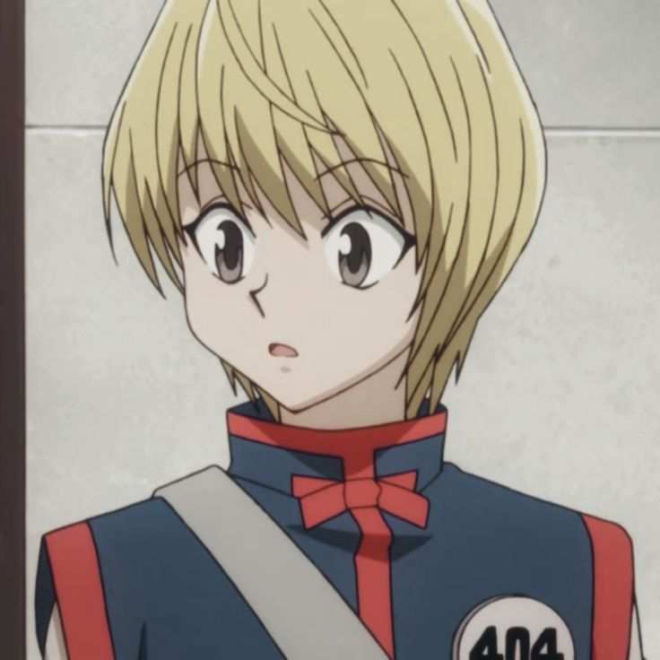

History :
Hunter x Hunter" is a renowned Japanese manga and anime series created by Yoshihiro Togashi. This captivating tale follows the adventures of a young boy named Gon Freecss, who embarks on a journey to become a Hunter in search of his absentee father, Ging Freecss, a legendary Hunter himself. In the Hunter x Hunter universe, Hunters are elite individuals with extraordinary skills, allowing them to undertake various missions, from hunting rare creatures to exploring uncharted territories. One of the remarkable aspects of "Hunter x Hunter" is its intricate and well-thought-out world-building. The story unfolds in a meticulously crafted universe filled with unique creatures, diverse cultures, and intricate power systems, such as Nen, which grants characters special abilities. This complexity adds depth to the characters and the challenges they face, making for a compelling narrative.
Main Character :
|  |  |
|||
Gon Frecces :
Gon Freecss, the protagonist of "Hunter x Hunter," is a character who embodies the spirit of adventure and determination. Born on Whale Island, Gon grew up believing that his absentee father, Ging Freecss, was a legendary Hunter, which inspired him to follow in his father's footsteps. What sets Gon apart is his unwavering optimism, boundless curiosity, and indomitable willpower. One of Gon's most defining traits is his genuine and straightforward nature. He approaches challenges with a sense of innocence, often making friends with ease due to his open-hearted demeanor. However, beneath his cheerful exterior lies a relentless drive to achieve his goals. This determination is especially evident in his pursuit of becoming a Hunter, a path filled with perilous trials and formidable adversaries.
Kilwa Zoldyck :
Killua Zoldyck is a central character in the captivating world of "Hunter x Hunter." Born into the infamous Zoldyck family of assassins, Killua initially appears as a cold and emotionless boy, groomed to be a ruthless killer from a young age. However, as the series unfolds, Killua undergoes a profound transformation that makes him one of the most complex and beloved characters in the story. What distinguishes Killua is his incredible agility, wit, and a unique ability called "Nen," which grants him extraordinary powers. Despite his formidable skills, Killua is plagued by a desire to break free from his family's dark legacy and discover his true identity. This inner conflict drives him to seek friendship and adventure, leading him to cross paths with Gon Freecss, with whom he forms an unbreakable bond.
Kurapika :
Kurapika, a pivotal character in Yoshihiro Togashi's "Hunter x Hunter," is a figure shrouded in mystery and driven by a powerful sense of purpose. Hailing from the Kurta Clan, Kurapika's life is forever marked by tragedy when his clan is massacred for their coveted Scarlet Eyes, which turn a vibrant scarlet in times of heightened emotion. Driven by a deep desire for vengeance and justice, Kurapika becomes a Hunter with a singular mission: to track down the Phantom Troupe, the group responsible for the annihilation of his people. Kurapika is characterized by his unwavering determination, intelligence, and meticulous planning. He is a master of Nen, a powerful and versatile energy system, and his abilities are tailored to vanquishing those who wronged his clan. However, beneath his stoic exterior lies a tumultuous mix of anger, sorrow, and vulnerability, which adds layers of complexity to his character..
Leorio :
Leorio Paradinight, one of the main characters in "Hunter x Hunter," brings a unique blend of humor, heart, and ambition to the series. While Gon, Killua, and Kurapika often steal the spotlight with their extraordinary abilities, Leorio's strength lies in his unwavering determination and his dream of becoming a doctor. Initially introduced as a slightly comical and money-driven character, Leorio's true character gradually unfolds as the story progresses. Leorio's aspiration to become a physician is deeply rooted in his past, where he experienced a personal tragedy due to a lack of medical care. This tragic event fuels his determination to amass wealth, not for personal gain, but to fund his medical education and provide free healthcare to those in need. His altruistic nature and desire to help others make him a noble and relatable character
Hisoka :
Hisoka Morow, a recurring antagonist and enigmatic character in "Hunter x Hunter," is one of the series' most complex and unpredictable figures. With a personality that blends charm, sadism, and an insatiable thirst for excitement, Hisoka is a formidable force within the Hunter Association's ranks. He is a skilled Nen user with a unique ability known as Bungee Gum, which allows him to manipulate a sticky substance for both offense and defense. What sets Hisoka apart is his obsession with strength and his peculiar sense of morality. He views life as a game, and other characters, especially strong opponents, become his playthings. Hisoka is drawn to those he considers worthy adversaries, often marking them with his ominous "Heaven's Arena" playing card as a sign of his interest. His motives and actions are shrouded in mystery, which adds an air of unpredictability to the story.
Ging Frecces :
Ging Freecss, the elusive father of the series' protagonist Gon Freecss in "Hunter x Hunter," is a character who remains an enigma for much of the story. Despite being largely absent from his son's life, Ging is a legendary Hunter known for his incredible skills and unrivaled achievements. His decision to abandon Gon and pursue his own adventures is a central mystery that drives much of the plot. What makes Ging intriguing is his unyielding pursuit of personal freedom and discovery. He embodies the essence of a true Hunter, someone who is driven by an insatiable curiosity about the world and an unwavering commitment to charting unexplored territories. His actions are often perplexing, as he follows his own path without concern for societal norms or personal relationships.
Illumi Zoldyck :
Illumi Zoldyck is a formidable character in "Hunter x Hunter," known for his eerie and unsettling presence. As a member of the infamous Zoldyck family of assassins, Illumi is a master of manipulation and control. His appearance, with long black hair, a perpetually stitched-up face, and an aura of cold detachment, adds to his unsettling demeanor. What defines Illumi is his loyalty to the Zoldyck family and his unwavering commitment to their traditions, including their deadly profession. His relationship with his younger brother, Killua, is particularly complex, characterized by a mix of genuine concern and a desire to keep Killua under the family's control. Illumi's willingness to go to extreme lengths to achieve his objectives, even if it means putting Killua's life at risk, underscores his ruthless nature
Chrollo Lucilfer :
Chrollo Lucilfer, the enigmatic leader of the Phantom Troupe in "Hunter x Hunter," is a captivating and complex character. With his calm and composed demeanor, Chrollo conceals a ruthless and cunning intellect. He is known for his strategic brilliance, masterful manipulation of Nen abilities, and a deep-rooted philosophy that justifies the troupe's criminal actions as a means of exacting revenge for their fallen comrades. Chrollo's most distinctive trait is his ability to steal the Nen abilities of other individuals by using a conjured book, the "Bandit's Secret." This power makes him an even more formidable adversary, as he can adapt to various situations and opponents by utilizing a diverse array of stolen abilities
Meruem :
Meruem, a central character in the "Chimera Ant" arc of "Hunter x Hunter," is a fascinating and complex figure. He is the king of the Chimera Ants, a species that undergoes a radical transformation when exposed to human traits. Meruem's character development is a journey from ruthless, ant-like instincts to a deeper understanding of humanity's complexities. Initially, Meruem is portrayed as a merciless and power-hungry creature, but as he encounters individuals like Komugi, a blind human girl, he begins to question his own purpose and identity. His interactions with Komugi, particularly their intense games of Gungi, reveal a softer side to him, emphasizing themes of compassion, empathy, and the potential for change.
Neferpitou :
Neferpitou, often simply referred to as Pitou, is one of the Royal Guards of the Chimera Ant King, Meruem, in "Hunter x Hunter." Pitou is a Chimera Ant with the ability to heal and reanimate the dead, making them an invaluable asset to the Chimera Ant hierarchy. Despite their initially inhuman and ruthless nature, Pitou's character undergoes a significant transformation throughout the "Chimera Ant" arc. Pitou is initially introduced as a calculating and fearsome adversary, responsible for committing horrific acts in the name of the Chimera Ants' growth and evolution. However, their interactions with Komugi, the Gungi player, and the gradual realization of their own emotions and attachments humanize them in a remarkable way.